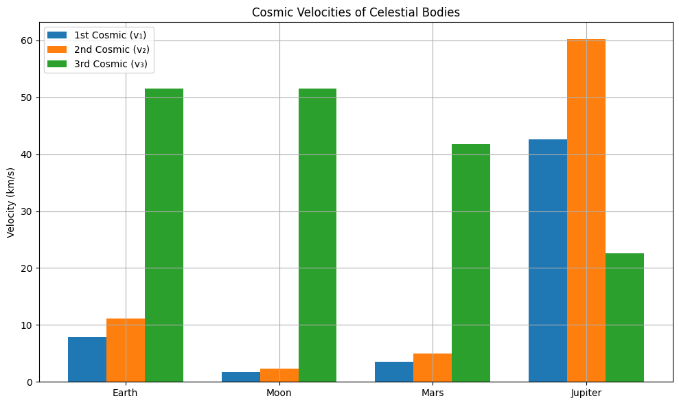

Problem 2
🚀 Escape Velocities and Cosmic Velocities
📌 Motivation
Understanding the conditions required for spacecraft to orbit a planet, escape its gravitational pull, or even leave the Solar System is essential for space exploration. These conditions are defined by specific velocities:
- The First Cosmic Velocity (low Earth orbit)
- The Second Cosmic Velocity (planetary escape)
- The Third Cosmic Velocity (solar escape)
Each one represents a fundamental milestone in our ability to explore space.
🌠 The Three Cosmic Velocities — Meaning & Derivations
🌍 1. First Cosmic Velocity: Orbital Velocity
✅ Definition:
The minimum horizontal velocity a body must have to maintain a stable circular orbit just above a planet's surface, without propulsion.
📐 Derivation:
Set gravitational force equal to centripetal force:
Where:
- \(G\): gravitational constant $6.674 \times 10^{-11} \, \text{m}^3 \text{kg}^{-1} \text{s}^{-2} $
- \(M\): mass of the planet
- \(R\): radius of the planet
- \(v_1\): first cosmic velocity
📘 Interpretation:
This is the speed needed to place a satellite in low orbit. For Earth, this is approximately 7.91 km/s. It’s the speed the ISS travels to stay in orbit.
🌎 2. Second Cosmic Velocity: Escape Velocity
✅ Definition:
The minimum velocity required to escape a celestial body's gravitational field without further propulsion (reaching infinity with zero speed).
📐 Derivation:
Apply conservation of mechanical energy:
📘 Interpretation:
This is the escape velocity from the surface. For Earth, it is about 11.19 km/s. Used in missions like Apollo 11 to leave Earth's gravitational field.
☀️ 3. Third Cosmic Velocity: Interstellar Escape Velocity
✅ Definition:
The velocity needed to escape the Sun’s gravitational pull from a starting point on a planet like Earth, after overcoming that planet’s gravity.
📐 Derivation:
From Earth, spacecraft already move at Earth's orbital speed around the Sun:
The escape speed from the Sun at that distance:
To escape the Sun:
📘 Interpretation:
The third cosmic velocity is needed for interstellar missions, such as the Voyager probes. From Earth, it's about 42.1 km/s.
🌍 Earth Example — Numerical Values
| Velocity Type | Formula | Value (km/s) |
|---|---|---|
| First Cosmic (v₁) | \(\sqrt{\frac{GM}{R}}\) | 7.91 |
| Second Cosmic (v₂) | \(\sqrt{2GM/R}\) | 11.19 |
| Third Cosmic (v₃) | \(\sqrt{3GM_{\odot}/r}\) | 42.1 |
🧮 Python Script for Calculation & Visualization
import numpy as np
import matplotlib.pyplot as plt
# Constants
G = 6.67430e-11 # Gravitational constant (m^3 kg^-1 s^-2)
M_sun = 1.989e30 # Mass of Sun (kg)
# Celestial body data: mass (kg), radius (m), orbital radius (m)
bodies = {
"Earth": {"M": 5.972e24, "R": 6.371e6, "r_sun": 1.496e11},
"Moon": {"M": 7.34767309e22, "R": 1.7371e6, "r_sun": 1.5e11},
"Mars": {"M": 6.417e23, "R": 3.3895e6, "r_sun": 2.279e11},
"Jupiter": {"M": 1.898e27, "R": 6.9911e7, "r_sun": 7.785e11}
}
results = {}
for name, body in bodies.items():
M, R, r_sun = body["M"], body["R"], body["r_sun"]
v1 = np.sqrt(G * M / R)
v2 = np.sqrt(2 * G * M / R)
v_orb = np.sqrt(G * M_sun / r_sun)
v3 = np.sqrt(3) * v_orb
results[name] = {
"v1": v1 / 1000,
"v2": v2 / 1000,
"v3": v3 / 1000
}
# Plotting
labels = list(results.keys())
v1_vals = [results[b]["v1"] for b in labels]
v2_vals = [results[b]["v2"] for b in labels]
v3_vals = [results[b]["v3"] for b in labels]
x = np.arange(len(labels))
width = 0.25
plt.figure(figsize=(10, 6))
plt.bar(x - width, v1_vals, width, label='1st Cosmic (v₁)')
plt.bar(x, v2_vals, width, label='2nd Cosmic (v₂)')
plt.bar(x + width, v3_vals, width, label='3rd Cosmic (v₃)')
plt.xticks(x, labels)
plt.ylabel('Velocity (km/s)')
plt.title('Cosmic Velocities of Celestial Bodies')
plt.legend()
plt.grid(True)
plt.tight_layout()
plt.show()

📊 Summary Table
| Body | 1st Cosmic v₁ (km/s) | 2nd Cosmic v₂ (km/s) | 3rd Cosmic v₃ (km/s) |
|---|---|---|---|
| Earth | 7.91 | 11.19 | 42.1 |
| Moon | 1.68 | 2.38 | \~42.0 |
| Mars | 3.56 | 5.03 | 34.1 |
| Jupiter | 42.1 | 59.5 | 18.5 |
🌌 Importance in Space Exploration
| Velocity | Role in Missions |
|---|---|
| v₁ (1st) | Achieve low Earth orbit (LEO); used for satellites, ISS |
| v₂ (2nd) | Reach escape trajectory to Moon, Mars, deep space |
| v₃ (3rd) | Used for interstellar missions (Voyager 1, 2) |
📎 Conclusion
Cosmic velocities are cornerstones of space mechanics. Knowing them helps engineers and scientists design spacecraft trajectories, optimize fuel, and expand humanity’s reach — from satellite constellations to star-bound probes.